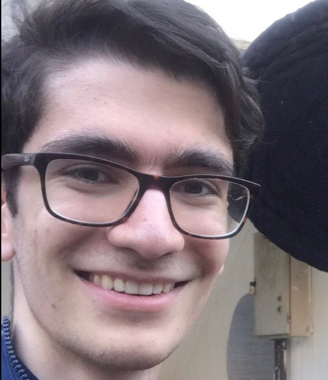
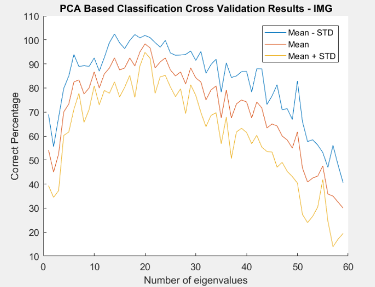
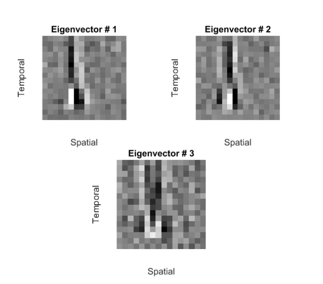
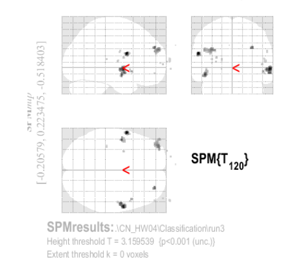
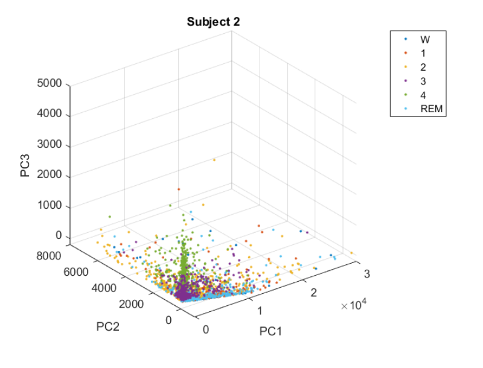

Behrad Moniri
Github / Twitter / Stack Exchange
Welcome to my home page. My name is Behrad Moniri and I am an undergraduate student of Electrical Engineering at Sharif University of Technology. I am interested in Machine Learning, Causal Inference, High Dimensional Probability and Signal Processing and their applications in Computational Neuroscience. I am currently working at Prof. H. K. Aghajan's Neuroscience Research Lab.
Questions? Comments? Send me an email! bemoniri@live.com
Education↑
- Bachelor of Science, Department of Electrical Engineering
- Sharif University of Technology, Tehran, Iran
- GPA = 18.99/20, 3rd Year, Ranked 6th in class of 180 students.
Selected Coursework:
Current Semester:High Dimensional Probability, Introduction to Machine Learning, Data Structures and Algorithms, FPGA System Design, Microprocessor Systems
Previous Semesters:
Causal Inference (Graduate) (19.8/20), Computational Neuroscience (20/20), Signals and Systems (20/20), Probability and Statistics (20/20), Linear Control Systems (20/20), Communication Systems (20/20), Engineering Mathematics (20/20), Numerical Computations (19/20), Computer Architecture (19/20), Differential Equations (20/20).
Related Experience↑
Research Assistant
- AIRLab, Department of Electrical Engineering, Sharif University of Technology.
Working on Computational Neuroscience and Machine Learning Teaching Assistant
- Signals and Systems, Prof. H. K. Aghajan, Department of Electrical Engineering
Sharif University of Technology, Spring 2019.
Holding tutorial classes on Signal Processing and LTI Systems Theory - Signals and Systems, Prof. H. Behroozi, Department of Electrical Engineering
Sharif University of Technology, Spring 2019.
Holding problem solving sessions on Signal Processing and LTI Systems Theory. - Engineering Mathematics, Prof. H. K. Aghajan, Department of Electrical Engineering
Sharif University of Technology, Fall 2018.
Holding tutorial sessions on Fourier Analysis, Partial Differential Equations and Complex Variables
Honors↑
- Academic Achiement Award, EE Department, Sharif University of Technology, 2018.
- Ranked 8th among 180 undergraduate students, EE Department, Sharif University of Technology, 2018.
- Second Prize, fMRI Competition, National Brain Mapping Lab, 2018.
- Reaching the final stage, Iran Brain-Computer Interface Competition (iBCIC), National Brain Mapping Lab, 2018.
Projects. ↑

Causal Inference using Neuroimaging Data
I am currently working on the problem of inferring causal structure from neuroimaging data in an stimulus-based setting. I am working on expanding Stimulus-Based Causal Inference (SCI), first introduced in Grosse-Wentrup et. al., to time series.

Motor Imagery Brain Computer Interface
In this projects, we implemented a brain computer interface used for motor imagery classification taks. Using EEG signals from healthy subjects, we used Common Spatial Patterns (CSP) and frequency domain based features and trained LDA, SVM, Linear and NB classifiers. After training these models, we used bagging methods to combine our results from different classifiers. We achieved 80% accuracy for 4-class classification and reached the final stage of iBCIC held by the National Brain Mapping Lab.

Additive Noise Models: Identifiablity Theorems, Learning Algorithms, Hidden Variables and Time Series
As the final project of Causal Inference course, I investigated the problem of inferring causal relations between variable under the assumption of additive noise models. I studied the related literature and implemented some of the algorithms that were proposed in the papers, e.g. TiMINo causality, in Python. The final report (in Persian) and the codes can be found here: Github

Complex Receptive Fields in Primary Visual Cortex of Cats
In this project, our goal was to understand what stimulus features are coded in the spiking activity of primary visual cortex (V1) neurons of cats. We performed spike triggered average and spike triggered correlation analysis on the stimulus ensemble. The work was based on Touryan et al. - 2002 and their dataset of invasive data collected from healthy cats. Our report (in Persian) and out MATLAB codes can be found here: Github

Music Genre Decoding in a Listening Task using fMRI Data
In this project, after the typical fMRI Analysis pipeline, e.g. Preprocessing, GLM Fitting, etc., we classified the genre of the music the subjects were listening to in a music listening task. We achieved above-chance level accuracy for genre classification on hold-out validation. The work was based on Casey-2017 and the dataset "ds000113b" from "openfmri.org". Instead of using the voxel selection method, ROI, which is introduced in the paper, we used an ANOVA and PCA based method for voxel selection and dimension reduction.

Classification of sleep stages from EEG, EOG and EMG Signals
In this project, we used EEG, EMG and EOG signals for detection of the sleep stage of healthy subjects. Using support vector machines, we achieved very high ac curacies for our classification. The report (in Persian) and our MATLAB codes can be found here: Github